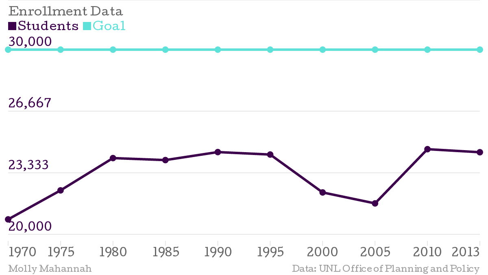
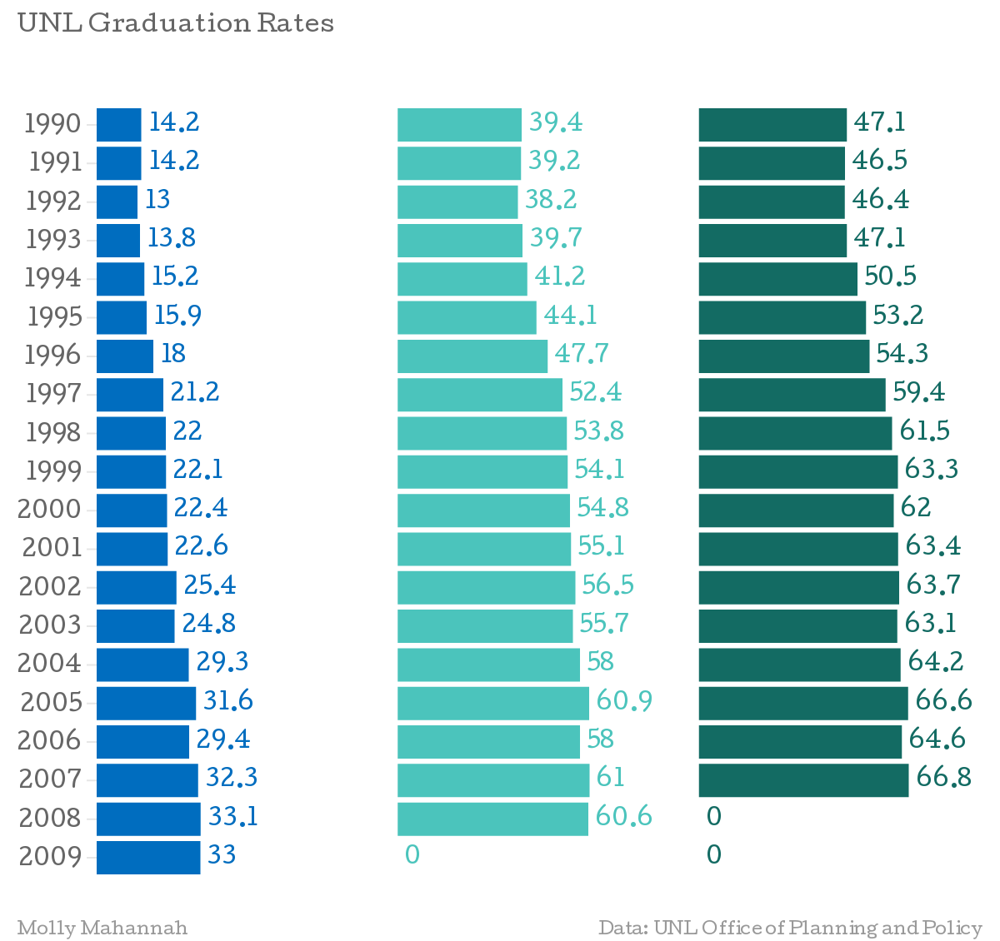

Harvey Perlman, Chancellor at the University of Nebraska-Lincoln, has set a goal to have 30,000 students enrolled at UNL by 2020. This goal has been mocked by several UNL students, including UNL's satirical publication The DailyER Nebraskan, because these goals seem near impossible for a school deemed the smallest in the big ten. After analyzing enrollment data provided by the UNL Office of Planning and Policy, it's clear to see that UNL's enrollment has never been higher than 25,000 students.
Output:
1967: 18067
1968: 19150
1969: 19618
1970: 20810
1971: 21541
1972: 21581
1973: 21160
1974: 20892
1975: 22380
1976: 22179
1977: 22256
1978: 22477
1979: 23661
1980: 24128
1981: 24786
1982: 25075
1983: 24789
1984: 24228
1985: 24020
1986: 23899
1987: 23469
1988: 23985
1989: 23926
1990: 24453
1991: 24620
1992: 24573
1993: 24491
1994: 23854
1995: 24320
1996: 23887
1997: 22827
1998: 22408
1999: 22142
2000: 22268
2001: 22764
2002: 22988
2003: 22559
2004: 21792
2005: 21675
2006: 22106
2007: 22973
2008: 23573
2009: 24100
2010: 24610
2011: 24593
2012: 24207
2013: 24445
In an effort to make UNL more appealing, Perlman also plans on getting more students to graduate in four years as opposed to five or six years.
